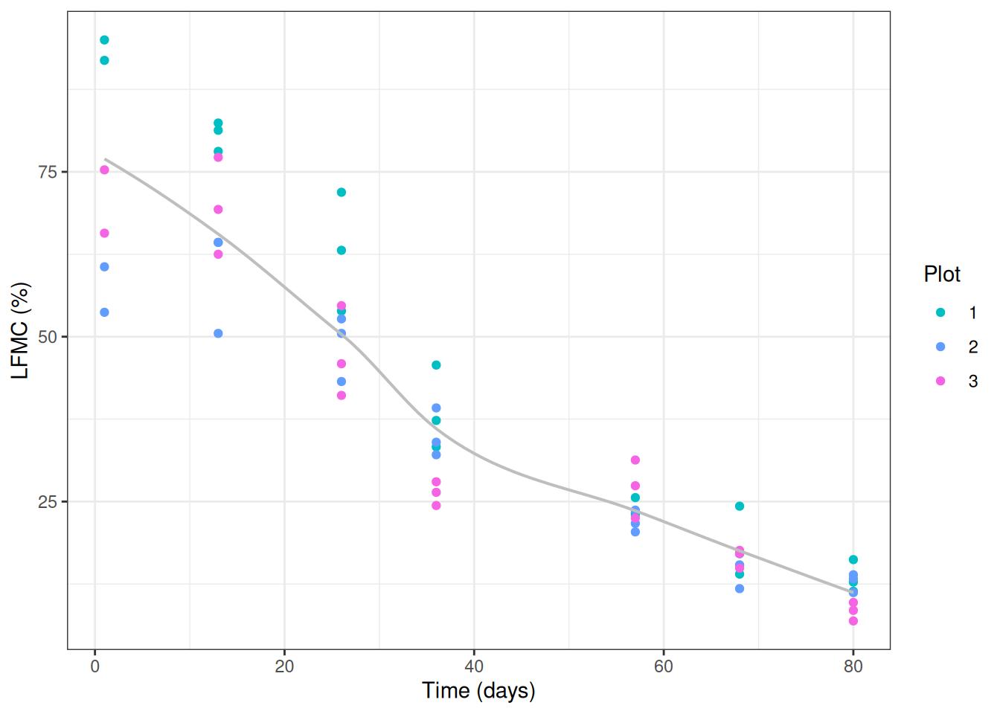
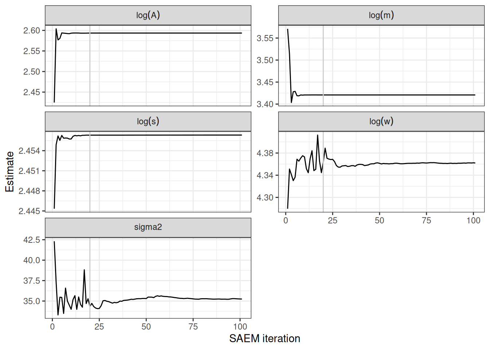
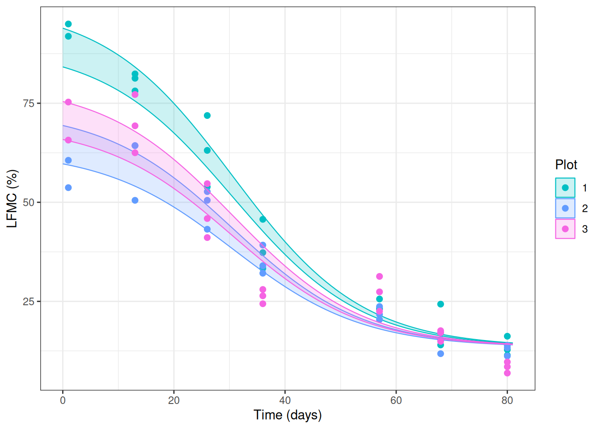

library(ggplot2); theme_set(theme_bw())
library(dplyr)
library(tidyr)Chapter 6: Stochastic E-step
SAEM-MCMC estimation for the LFMC data
This chapter comes with Chapter 6 of the book “Stochastic approximation of the E step” . It illustrates the use of the SAEM-MCMC algorithm (Stochastic Approximation EM with a Metropolis-within-Gibbs MCMC step, Kuhn and Lavielle (2004)) on a non-linear mixed effect model.
Dataset
We use the dataset LFMC (Oddi et al. (2019)) supplied with the publication. They have measured along time the Live Fuel Moisture Content (LFMC) at several plots in northwest extra-Andean Patagonia. The measure of LFMC is a relevant indicator in fire‐prone ecosystems because it helps predicting the vegetation moisture threshold at which fires are highly probable.
In this illustration, we focus on LFMC temporal dynamics for perennial grasses measured on the Eastern site of the dataset (leaf.type == "Grass E").

A NLME model
ImportantNLME model with logistic regression function
As described in Chapter 6 of the book, for each plot \(i\), the LFMC is modelled with a declining four-parameter logistic curve:
\[ \text{LFMC}_{ij} = \frac{A_i - w_i}{1 + \exp\left(\frac{m_i - t_{ij}}{s_i}\right)} + w_i + \varepsilon_{ij}, \qquad \varepsilon_{ij} \sim \mathcal N(0,\sigma^2). \]
The individual parameters are log-transformed and gathered in \(\boldsymbol\varphi_i = (\log A_i, \log w_i, \log m_i, \log s_i)\). We assume that they are assumed to follow a Gaussian distribution with mean \(\boldsymbol\mu\) and covariance matrix \(\boldsymbol\Omega\): \[ \boldsymbol\varphi_i \sim_{i.i.d.} \mathcal{N}(\boldsymbol\mu,\boldsymbol\Omega ).\]
SAEM-MCMC is used to estimate the population parameters \(\theta = (\boldsymbol\mu, \boldsymbol\Omega, \sigma^2)\).
Estimation by SAEM-MCMC
This document relies on the helper functions in SAEM-MCMC_functions.R which contains the four-parameter logistic, the initialisation, the MCMC sampler, and the SAEM-MCMC algorithm.
# Helper functions (four-parameter logistic, init, MCMC, SAEM-MCMC)
source("SAEM-MCMC_functions.R")
NoteRemark
Estimation results are cached: if the saved files res_SAEM_LFMC.Rdata and res_postSample_LFMC.Rdata are present they are loaded; otherwise the algorithms are run live (which takes longer).
Initialisation of the algorithm
We first build a rough guess \(\boldsymbol\varphi_i^{(0)}\) of the individual log-parameters for each plot, then derive the population parameters from these values.
For plot \(i\), initZ proceeds by optimisation on the “individual curve”:
- \(A_i\) and \(w_i\) are set to the mean observed LFMC at the last and first observation times,
- rearranging the logistic gives a linear model in time, \(\log\!\big(\frac{A_i - w_i}{\text{LFMC}_{ij} - w_i} - 1\big) = \frac{m_i}{s_i} - \frac{t_{ij}}{s_i}\), whose fit (over all observation times of the plot) yields \(m_i\) and \(s_i\).
initTheta then sets \(\boldsymbol\mu\) as the mean and \(\boldsymbol\Omega\) as the (diagonal) variance of the initial \(Z^{(0)}\), and \(\sigma^2\) as the mean squared residual of the logistic fit.
Z.init <- initZ(myData)
theta.init <- initTheta(Z.init, myData)Code (to display initial value)
tbl_Zinit <- data.frame(
Plot = 1:nPlot,
Z.init
)
colnames(tbl_Zinit)[-1] <- c("log(A)", "log(w)", "log(m)", "log(s)")
knitr::kable(tbl_Zinit,
digits = 3,
align = "c",
caption = "Initial individual log-parameters $\\\\varphi_i^{(0)}$ obtained by per-plot optimisation."
) |>
kableExtra::kable_styling(bootstrap_options = c("striped", "hover", "condensed"),
full_width = FALSE)| Plot | log(A) | log(w) | log(m) | log(s) |
|---|---|---|---|---|
| 1 | 2.600 | 4.537 | 3.490 | 2.430 |
| 2 | 2.549 | 4.046 | 3.630 | 2.433 |
| 3 | 2.124 | 4.256 | 3.592 | 2.472 |
Running SAEM-MCMC
The SAEM-MCMC algorithm described in Chapter 6 is run with \(H=100\) SAEM iterations, each involving a short MCMC exploration of the individual parameters (\(M=100\) iterations), and the Metropolis proposal scale rho = c(1/100, 1/10, 1, 2). During the first \(h=20\) iterations the whole step size is used (stochastic behaviour), then it decreases as \(1/k^{0.99}\).
paramsAlgo <- list(
nbIterMCMC = 100,
nbIterSAEM = 100,
rho = c(1/100, 1/10, 1, 2),
keep = FALSE,
print = FALSE
)
paramsAlgo$gammaSAEM <- c(rep(1, 20), 1/(1:paramsAlgo$nbIterSAEM)^0.99)The SAEM step (SAEM_MCMC_NLME) embeds the Metropolis-within-Gibbs sampler (MCMC_NLME). Full commented implementation details of the two functions are given in SAEM-MCMC_functions.R and discussed in Chapter 6 of the book.
res_SAEM_MCMC <- SAEM_MCMC_NLME(myData, paramsAlgo, omegaDiag = TRUE)
df_res_SAEM_MCMC <- as.data.frame(cbind(
res_SAEM_MCMC$mu, res_SAEM_MCMC$sigma2))
names(df_res_SAEM_MCMC) <- c("log(A)", "log(w)", "log(m)", "log(s)", "sigma2")
df_res_SAEM_MCMC$iterations <- 1:(paramsAlgo$nbIterSAEM + 1)Code to load the cached estimation results
res_SAEM <- file.exists("res_SAEM_LFMC.Rdata")
res_post <- file.exists("res_postSample_LFMC.Rdata")
if (res_SAEM) {
# Load saved, already-processed trace of the SAEM iterations
load("res_SAEM_LFMC.Rdata") # -> df_res_SAEM_MCMC
} else {
# Run the SAEM-MCMC algorithm live
res_SAEM_MCMC <- SAEM_MCMC_NLME(myData, paramsAlgo, omegaDiag = TRUE)
df_res_SAEM_MCMC <- as.data.frame(cbind(
res_SAEM_MCMC$mu, res_SAEM_MCMC$sigma2))
names(df_res_SAEM_MCMC) <- c("log(A)", "log(w)", "log(m)", "log(s)", "sigma2")
df_res_SAEM_MCMC$iterations <- 1:(paramsAlgo$nbIterSAEM + 1)
}Trace plots of the SAEM iterations
We now plot the estimations of the population parameters obtained along the iterations of the SAEM.
Plot the traces
df_trace <- pivot_longer(
df_res_SAEM_MCMC,
cols = c("log(A)", "log(w)", "log(m)", "log(s)", "sigma2"),
names_to = "parameter",
values_to = "value"
)
ggplot(df_trace, aes(x = iterations, y = value)) +
geom_line() +
geom_vline(xintercept = 20, colour = "grey80", linewidth = 0.5) +
facet_wrap(~ parameter, scales = "free_y", ncol = 2,
labeller = label_parsed) +
labs(x = "SAEM iteration", y = "Estimate")
The vertical line marks the end of the stochastic phase (k = 20). The curves illustrate the stochastic behaviour of the algorithm. During the initial iterations, \(\gamma_h\) , so the algorithm exhibits no memory effect. From \(h=20\) onward, \(\gamma_h\) gradually decreases, resulting in a stabilization of the algorithm.
Point estimates
Code to display the population parameters
if (res_SAEM) {
# Recompute the final theta values that were used for posterior sampling
n <- paramsAlgo$nbIterSAEM + 1
mu <- c(
`log(A)` = df_res_SAEM_MCMC$`log(A)`[n],
`log(w)` = df_res_SAEM_MCMC$`log(w)`[n],
`log(m)` = df_res_SAEM_MCMC$`log(m)`[n],
`log(s)` = df_res_SAEM_MCMC$`log(s)`[n]
)
theta.estim <- list(mu = mu, sigma2 = df_res_SAEM_MCMC$sigma2[n])
} else {
n <- paramsAlgo$nbIterSAEM + 1
theta.estim <- list(
mu = res_SAEM_MCMC$mu[n, ],
sigma2 = res_SAEM_MCMC$sigma2[n],
Omega = res_SAEM_MCMC$Omega[n, , ]
)
}
tbl_estim <- data.frame(
Parameter = c("log(A)", "log(w)", "log(m)", "log(s)", "sigma^2"),
Estimate = unname(c(theta.estim$mu, theta.estim$sigma2))
)
knitr::kable(tbl_estim,
col.names = c("Parameter", "SAEM-MCMC estimate"),
digits = 3,
align = "lc",
caption = "SAEM-MCMC point estimates of the population parameters."
) |>
kableExtra::kable_styling(bootstrap_options = c("striped", "hover", "condensed"),
full_width = FALSE)| Parameter | SAEM-MCMC estimate |
|---|---|
| log(A) | 2.593 |
| log(w) | 4.362 |
| log(m) | 3.421 |
| log(s) | 2.456 |
| sigma^2 | 35.245 |
Posterior individual trajectories
Once the SAEM algorithm has converged to \(\widehat{\theta} = (\widehat{\mu},\widehat{\Omega},\widehat{\sigma}^2)\), we run an longer MCMC algorithm (\(M=5000\)) to draw samples of the individual random effects from the conditional distribution $ Z_i^m p_{}(Z_i ). $. Each sample \(Z_i^m\) defines an individual logistic curve $ t (t;(Z_i^m)). $. The shaded band is obtained by computing, at each time \(t\), the empirical 2.5% and 97.5% quantiles of these sampled curves, yielding a pointwise 95% posterior credible band. This band illustrates the variability of the individual drying trajectories compatible with the observations, thereby providing a visual assessment of the range of plausible individual responses.
paramsAlgo2 <- paramsAlgo
paramsAlgo2$keep <- TRUE
paramsAlgo2$nbIterMCMC <- 5000
paramsAlgo2$print <- TRUEpost_Ind_param_MCMC <- MCMC_NLME(res_SAEM_MCMC$Z, myData,
theta.estim, paramsAlgo2)Code to load the cached posterior results
if (res_post) {
load("res_postSample_LFMC.Rdata") # -> post_Ind_param_MCMC
} else {
post_Ind_param_MCMC <- MCMC_NLME(res_SAEM_MCMC$Z, myData,
theta.estim, paramsAlgo2)
}
#dim(post_Ind_param_MCMC)Code to plot posterior credible band
seq_iter <- seq(paramsAlgo2$nbIterMCMC / 2, paramsAlgo2$nbIterMCMC, by = 2)
gg <- ggplot()
for (i in 1:nPlot) {
Data.i <- myData |> filter(plot == i)
seq_time <- seq(0, max(Data.i$time) + 1, length.out = 100)
Z.post.i <- post_Ind_param_MCMC[seq_iter, i, ]
F.i <- sapply(1:nrow(Z.post.i), function(m) {
FourParamLogis(seq_time, exp(Z.post.i[m, ]))
})
q.i <- apply(F.i, 1, quantile, probs = c(0.025, 0.975), na.rm = TRUE)
Data_simpost.i <- data.frame(time = seq_time)
Data_simpost.i$plot_fact <- factor(i, levels = ord)
Data_simpost.i$q05 <- q.i[1, ]
Data_simpost.i$q95 <- q.i[2, ]
gg <- gg +
geom_ribbon(data = Data_simpost.i,
aes(x = time, ymin = q05, ymax = q95,
fill = plot_fact, colour = plot_fact),
alpha = 0.20, linewidth = 0.4) +
geom_point(data = Data.i,
aes(x = time, y = lfmc, colour = plot_fact),
size = 2)
}
gg +
scale_colour_manual(values = cols) +
scale_fill_manual(values = cols) +
labs(x = "Time (days)", y = "LFMC (%)", colour = "Plot", fill = "Plot")
The shaded bands are the pointwise 95% credible intervals of the predicted LFMC trajectories for each plot, and the points are the observations. The model reproduces the declining LFMC dynamics of the three Eastern grasses plots well.
References
Kuhn, E., and M. Lavielle. 2004. “Coupling a Stochastic Approximation Version of EM with an MCMC Procedure.” ESAIM: Probability and Statistics 8: 115–31. https://doi.org/10.1051/ps:2004007.
Oddi, F. J., F. E. Miguez, L. Ghermandi, L. O. Bianchi, and L. A. Garibaldi. 2019. “A Nonlinear Mixed-Effects Modeling Approach for Ecological Data: Using Temporal Dynamics of Vegetation Moisture as an Example.” Ecology and Evolution 9 (18): 10225–40.